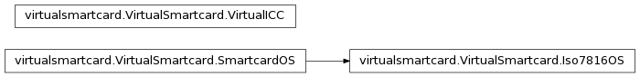

Bases: virtualsmartcard.VirtualSmartcard.SmartcardOS
secure access module
Calculate Answer to Reset (ATR) and returns the bitstring.
- directConvention (bool): Whether to use direct convention or
inverse convention.
- TAi, TBi, TCi (optional): Value between 0 and 0xff. Interface
Characters (for meaning see ISO 7816-3). Note that if no transmission protocol is given, it is automatically selected with T=max{j-1|TAj in args OR TBj in args OR TCj in args}.
- T (optional): Value between 0 and 15. Transmission Protocol.
Note that if T is set, TAi/TBi/TCi for i>T are omitted.
- histChars (optional): Bitstring with 0 <= len(histChars) <= 15.
Historical Characters T1 to T15 (for meaning see ISO 7816-4).
T0, TDi and TCK are automatically calculated.
Returns a byte according to the third software function table from the historical bytes of the card capabilities.
master file
Powers down the card
Bases: object
Base class for a smart card OS
Returns response to the given APDU as string of characters
| Parameters: | msg – the APDU as string of characters |
|---|
Returns the ATR of the card as string of characters
Powers down the card
Powers up the card
Performs a warm reset of the card (no power down)
Bases: object
This class is responsible for maintaining the communication of the virtual PCD and the emulated smartcard. vpicc and vpcd communicate via a socket. The vpcd sends command APDUs (which it receives from an application) to the vicc. The vicc passes these CAPDUs on to an emulated smartcard, which produces a response APDU. This RAPDU is then passed back by the vicc to the vpcd, which forwards it to the application.
Receive a message from the vpcd
Send a message to the vpcd
Open a connection to a given host on a given port.
Main loop of the vpicc. Receives command APDUs via a socket from the vpcd, dispatches them to the emulated smartcard and sends the resulting respsonse APDU back to the vpcd.
Basically this signal handler just surpresses a traceback from being printed when the user presses crtl-c